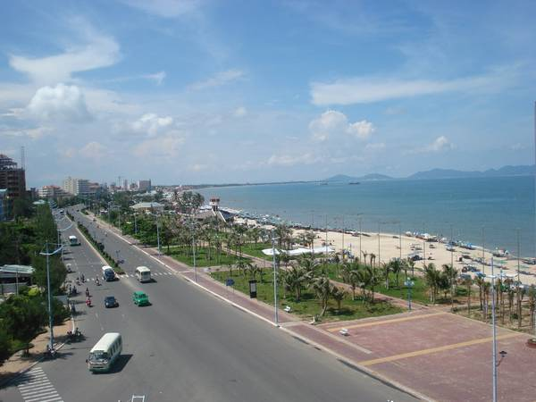
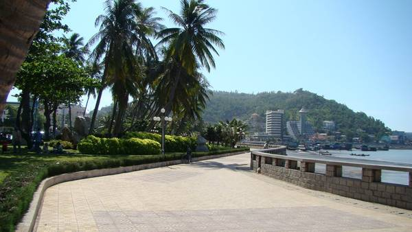
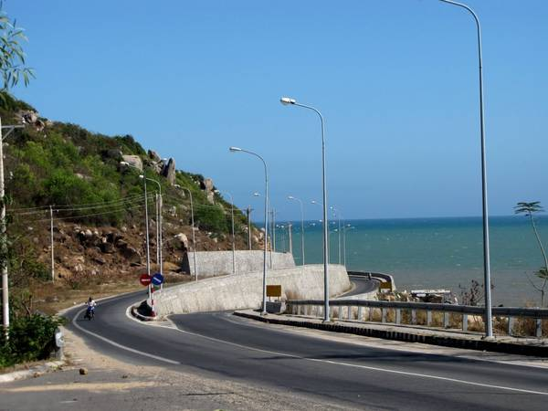
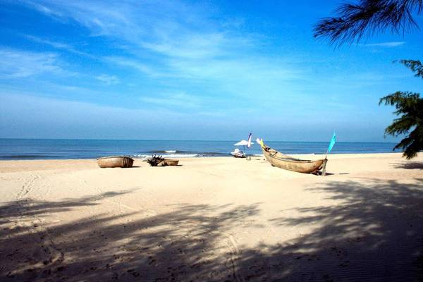
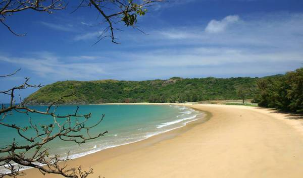
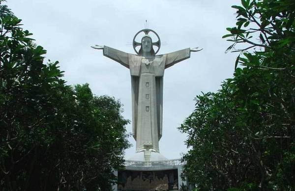

VŨNG TÀU
ĐI DU LỊCH LÀ MỘT "Ý TƯỞNG" TUYỆT VỜI

VŨNG TÀU
THIÊN ĐƯỜNG NGHỈ DƯỠNG

Bãi Sau
Bãi sau Vũng Tàu nổi tiếng với bờ biển đẹp và ít sóng lớn, tập trung rất nhiều khách sạn và khu ăn uống. Do đó đa số các du khách khi du lịch Vũng Tàu đều thích ở Bãi Sau. Bãi sau còn có cung đường Thùy Vân khá nổi tiếng tương tự như con đường Trần Phú ở Nha Trang, có khá nhiều khách sạn từ bình dân đến cao cấp nằm trên con đường này.
Bãi Trước
Trung tâm của thành phố Vũng Tàu nằm ở bãi trước, nơi đây tập trung khá nhiều cao ốc và các khu mua bán sầm uất. Du khách thường chọn bãi tắm ở khu vực bãi sau vì bãi trước ô nhiễm hơn do mật độ dân cư sinh sống và du khách tập trung đông đúc. Tuy nhiên, bãi trước sẽ là nơi lý tưởng để bạn ngắm hoàng hôn hoặc đi dạo.
Long Hải
Cách thành phố Hồ Chí Minh khoảng 110km về hướng Đông Bắc (tương đương khoảng 2 – 2,5 tiếng đi xe máy), biển Long Hải là địa điểm nghỉ dưỡng được nhiều du khách yêu thích. Long Hải có bãi biển đẹp với làn nước trong xanh, cát vàng trải dài và những khu resort gần biển. Đặc biệt, biển Long Hải có nhiều hải sản tươi ngon với giá khá rẻ. Suối khoáng nóng Bình Châu nằm trên tuyến đường du lịch Long Hải, cũng là điểm dừng chân thú vị với du khách.
Hồ Cốc - Hồ Tràm
Hai bãi biển này đều thuộc huyện Xuyên Mộc, là điểm du lịch hấp dẫn du khách bởi nét hoang sơ nguyên thủy hiếm có. Biển ở đây nước trong xanh in đáy cát quanh năm, khu bãi tắm cát trắng trải rộng, độ dốc thoai thoải và đặc biệt đẹp thơ mộng nhờ các tảng đá nằm trong bãi tắm tạo nên những đợt sóng biển tung bọt trắng xóa.
Côn Đảo
Côn Đảo nổi tiếng với bãi biển trong vắt, hàng dừa xanh và bờ cát trắng có thể làm say mê bất cứ du khách nào. Thật dễ hiểu vì sao Côn Đảo thu hút rất nhiều du khách trong và ngoài nước đến thưởng lãm. Với vẻ đẹp hoang sơ và chưa bị tác động nhiều bởi ngành công nghiệp du lịch, Côn Đảo hiện nay quả thật là thiên đường du lịch hiếm có ở Việt Nam.
Tượng Đức Chúa dang tay
Tượng Chúa Ki-Tô hay Tượng Đức Chúa dang tay đứng trên đỉnh Núi Nhỏ của thành phố Vũng Tàu, được xây từ năm 1974. Bức tượng này cao 32 m, sải tay dài 18,3 m trên độ cao 170 m nhìn ra biển, bên trong có cầu thang 133 bậc lên tận 2 tay của tượng. Bức tượng có thể xem như một phiên bản tương tự tượng chúa dang tay tại thành phố Rio de Janeiro ở Brasil.
